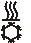

配置：QMX3.P34/37/44/74（PrphDev - 子系统特定的扩展）
外围设备 (PrphDev) 对象支持子系统特定扩展的以下属性Configure: QMX3.P34/37/44/74.
✳ 表示西门子专有财产。
Room unit, display temperature ✳ |
|
| |
|---|---|---|---|
"Room unit, display temperature" 定义可以显示哪些温度值。 | |||
None | 室内温度和室外温度均不显示。 | ||
Display room temperature | 仅显示室温。该设置仅在室温传感器启用时才有意义。 | ||
导航 | , 关键 1: | ||
Display outside air temperature | 仅显示室外温度。 | ||
导航 | , 关键 1: | ||
Display room & outside air temp. | 显示室温和室外温度。启用值之间的切换。该设置仅在室温传感器启用时才有意义。 | ||
导航 | , 关键 1: | ||
Room unit, display humidity ✳ |
|
| |
|---|---|---|---|
"Room unit, display humidity" 定义可以显示哪些相对湿度值。 | |||
None | 室内相对湿度和室外相对湿度均不显示。 | ||
Display room humidity | 仅显示房间相对湿度。仅当启用相对房间湿度传感器时，此设置才有意义。 | ||
导航 | , 关键 1: | ||
Display outside air humidity | 仅显示外部相对湿度。 | ||
导航 | , 关键 1: | ||
Display room & outside humidity | 显示室内相对湿度和室外相对湿度。启用值之间的切换。仅当启用相对房间湿度传感器时，此设置才有意义。 | ||
导航 | , 关键 1: | ||
Room unit, display windows status ✳ |
|
| |
|---|---|---|---|
"Room unit, display windows status" 启用或禁用窗口打开的指示。如果窗口打开，则连接的窗口开关处于活动状态。 | |||
是的 | 如果窗口已打开，则会显示打开窗口的图标。 | ||
No | 如果窗口打开，则不会显示任何图标。 | ||

Room unit, display air quality ✳ |
|
| |
|---|---|---|---|
"Room unit, display air quality" 定义可以显示哪些空气质量。 | |||
None | 不显示空气质量。 | ||
Display room air quality | 显示房间的空气质量。仅当启用室内空气质量传感器时，此设置才有意义。 | ||
导航 | , 关键 1: | ||
Display outside air quality | 显示室外空气质量。 | ||
导航 | , 关键 1: | ||
Note：只有当外部空气质量值可用时，此设置才有意义。 | |||
Display room & outside air quality | 显示室内和室外的空气质量。启用值之间的切换。 | ||
导航 | , 关键 1: | ||
Note：只有当外部空气质量值可用时，此设置才有意义。 | |||
Room unit, air quality display ✳ |
|
| |
|---|---|---|---|
"Room unit, air quality display" 定义空气质量的显示方式。 | |||
Numeric, in ppm | 空气质量显示为以 ppm 为单位的数值。 | ||
Symbolic | 空气质量用符号 --+、-++ 和 +++ 显示。 | ||
Textual | 空气质量用文字显示：差、好、好。 | ||
Room unit, display heating/cooling status ✳ |
|
| |
|---|---|---|---|
"Room unit, display heating/cooling status" 启用或禁用工厂状态的显示。 | |||
是的 | 图标指示设备是否正在加热或冷却。  | ||
No | 不显示工厂状态。 | ||
Enable operation: Room temperature setpoint ✳ |
|
| |
|---|---|---|---|
"Enable operation: Room temperature setpoint“定义是否显示温度设定点或温度设定点的偏移以及用户是否可以更改其中之一。 | |||
是的 | 显示温度设定点或温度设定点的偏移，用户可以更改它。该设置仅在室温传感器启用时才有意义。 | ||
导航 | |||
No | 温度设定点和温度设定点的偏移均不会显示，用户也无法更改。 | ||
Room unit, room temp. setpoint display ✳ |
|
| |
|---|---|---|---|
"Room unit, room temp. setpoint display" 定义如何显示温度设定值的变化。 | |||
Absolute temperature setpoint | " 指定是否在设备发现过程中检索第 3 方设备。 | ||
Relative setpoint shift | 显示温度设定值的更改值。 | ||
Enable operation: Fan speed setpoint ✳ |
|
| |
|---|---|---|---|
"Enable operation: Fan speed setpoint" 定义是否显示风扇速度以及用户是否可以更改风扇速度。 | |||
是的 | 源应用程序模板和目标应用程序模板必须具有相同的类型和版本。 | ||
关键3 | |||
No | 风扇速度不显示，用户无法更改。 | ||
Enable operation: Room humidity setpoint ✳ |
|
| |
|---|---|---|---|
"Enable operation: Room humidity setpoint" 定义是否显示相对湿度设定值以及用户是否可以更改它。 | |||
是的 | 显示相对湿度设定值，用户可以更改它。仅当启用相对房间湿度传感器时，此设置才有意义。 | ||
导航 | |||
No | 不显示相对湿度设定值，用户无法更改它。 | ||
Enable operation: Air quality setpoint ✳ |
|
| |
|---|---|---|---|
"Enable operation: Air quality setpoint" 定义是否显示空气质量设定值以及用户是否可以更改它。 | |||
是的 | 显示空气质量设定值，用户可以更改它。仅当启用室内空气质量传感器时，此设置才有意义。 | ||
导航 | |||
No | 空气质量设定值不会显示，用户无法更改它。 | ||
Enable operation: Presence button ✳ |
|
| |
|---|---|---|---|
"Enable operation: Presence button" 定义用户是否可以通过按 8 键确认其存在。 | |||
是的 | 用户可以通过按 8 键确认他的存在。 | ||
Note：如果属性“，请勿使用此设置”Enable operation: Temporary comfort”设置为“是”。 | |||
键 8 | |||
No | 用户无法通过按 8 键来确认自己的存在。 | ||
Enable operation: Temporary comfort ✳ |
|
| |
|---|---|---|---|
"Enable operation: Temporary comfort” 定义用户是否可以使用密钥 8 来确认其存在一段时间，例如 1 小时。该时间可以配置。 | |||
是的 | 用户可以确认他在一段时间内的存在。 | ||
Note：如果属性“，请勿使用此设置”Enable operation: Presence button”设置为“是”。 | |||
键 8 | |||
No | 用户在一段时间内无法确认自己的存在。 | ||
Enable operation: Room operating mode ✳ |
|
| |
|---|---|---|---|
"Enable operation: Room operating mode" 定义是否显示当前操作模式以及用户是否可以更改它。 | |||
是的 | 显示当前操作模式 | ||
关键 7 |
| ||
No | 不显示当前操作模式。 | ||

Enable operation: Green leaf ✳ |
|
| |
|---|---|---|---|
"Enable operation: Green leaf”定义“绿叶”LED 是否指示是否满足能效状态的条件以及用户是否可以将应用程序重置为能效参数值。 | |||
是的 | “绿叶”LED 指示是否满足能效状态的条件，并且用户可以将应用程序重置为能效参数值。 | ||
No | “绿叶”LED 并不指示是否满足能效状态的条件，并且用户无法将应用程序重置为能效参数值。 | ||